在本期视频中，我们来看看监督学习的工作流程是怎样的。00:02
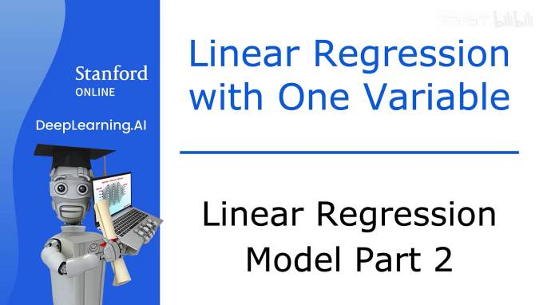
监督学习算法会输入一个数据集，那么它到底做了什么，又会输出什么呢？00:08
我们在这期视频中一探究竟。00:14
回顾一下，监督学习中的训练集既包含输入特征，比如房屋面积，也包含输出目标，比如房价。00:18
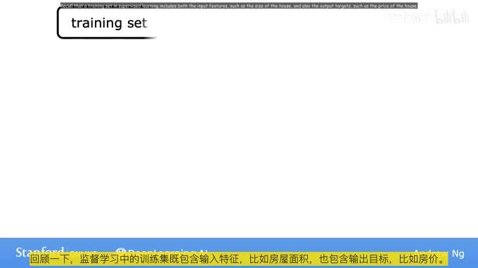
输出目标是模型将要学习的正确答案。00:28
为了训练模型，你将训练集，包括输入特征和输出目标，一并提供给学习算法。00:34
然后，你的监督学习算法就会产生某个函数。00:43
我们将这个函数写作小写 f，其中 f 代表函数。00:48
过去，这个函数曾被称为假设，但在这门课中，我就直接称之为函数 f。00:54
f 的作用是接收一个新的输入 x，然后输出一个估计值或预测值，我称之为 y hat。01:02
它的写法和变量 y 一样，只是上面加了这个小小的帽子符号。01:15
在机器学习中，惯例是用 yhat 表示对 y 的估计或预测。01:22
x 被称为输入或输入特征，模型的输出则是预测值 y hat。01:35
当符号仅仅是字母 y 时，那指的是目标，即训练集中实际的真实值。01:49
相比之下，yhat 是一个估计值。01:59
它可能是，也可能不是实际的真实值。02:03
如果你在帮客户卖房，在房子售出前，其真实价格是未知的。02:07
所以，你的模型 f，在给定面积后，会输出一个价格，也就是估计值，即对真实价格的预测。02:14
现在，当我们设计一个学习算法时，一个关键问题是，我们该如何表示函数 f？02:24
换言之，我们要用什么数学公式来计算 f 呢？02:33
目前，我们先坚持用一条直线来表示 f。02:40
那么你的函数可以写成 f，下标 w，逗号 b，括号 x 等于，我将使用 w 乘以 x 加 b。02:45
我稍后会定义 w 和 b，但现在只需知道 w 和 b 是数字，它们取的值将决定基于输入特征 x 得出的预测值 y。02:57
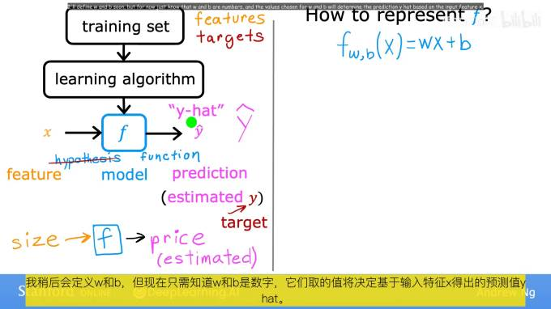
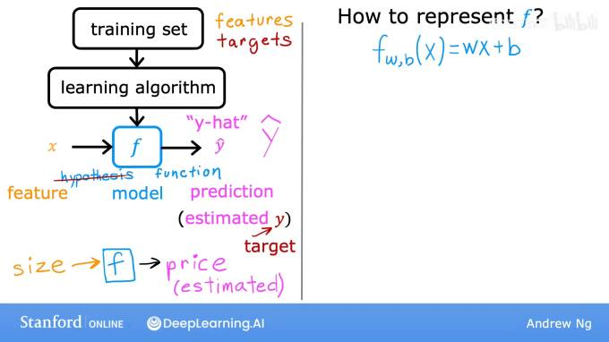
所以这个 fw，b，括号 x，意味着 f 是一个接收输入 x 的函数，并且取决于 w 和 b 的值，f 会输出某个预测。03:14
作为这种写法的替代，我有时也会简写成括号 x，而不在下标中显式地包含 w 和 b。03:30
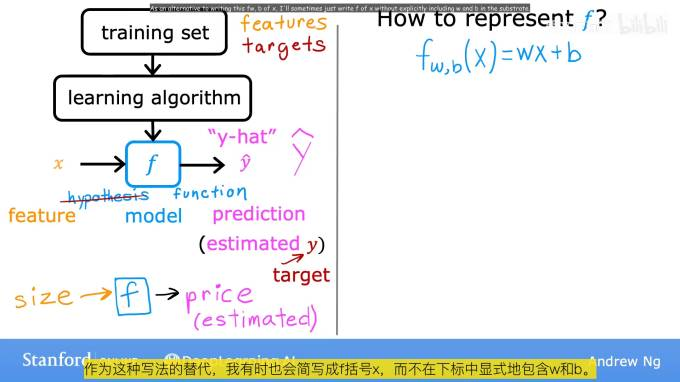
这只是一种更简单的记法，但与 fw，b，括号 x 的意思完全相同。03:42
我们把训练集画在图上，横轴是输入特征 x，纵轴是输出目标 y。03:49
记住，算法从这些数据中学习，并生成一条最佳拟合线，可能就像这里这条。04:00
这条直线就是线性函数 f 下 w，下 b，括号 x 等于 w 乘以 x 加 b。04:08
或者更简单地，我们可以省略 w 和 b，只写成 f 括号 x 等于 wx 加 b。04:18
这个函数所做的是，利用一条关于 x 的直线函数来预测 y 的值。04:27
你可能会问，我们为什么要选择线性函数，即一条直线，而不是某些非线性函数，比如一条曲线或抛物线呢？04:35
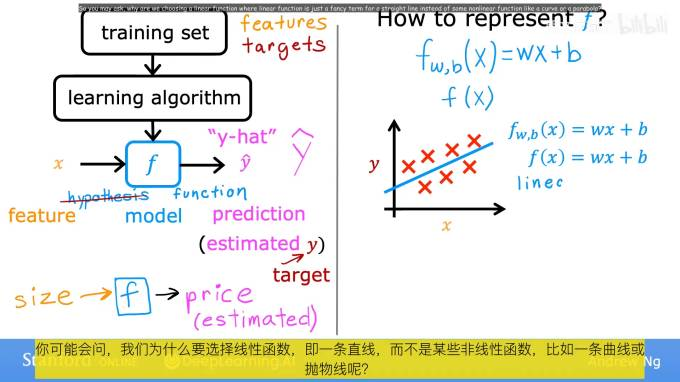
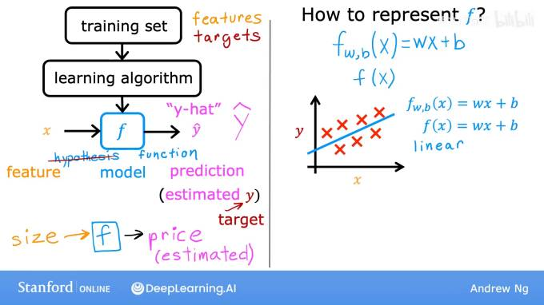
有时你确实也需要拟合更复杂的非线性函数，比如像这样的曲线。04:47
但既然线性函数相对简单且易于处理，我们就先用直线作为基础，这最终会帮助你过渡到更复杂的非线性模型。04:54
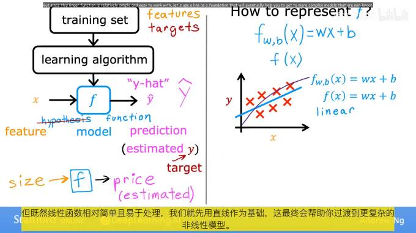
这个模型有个名字，叫做线性回归。05:07
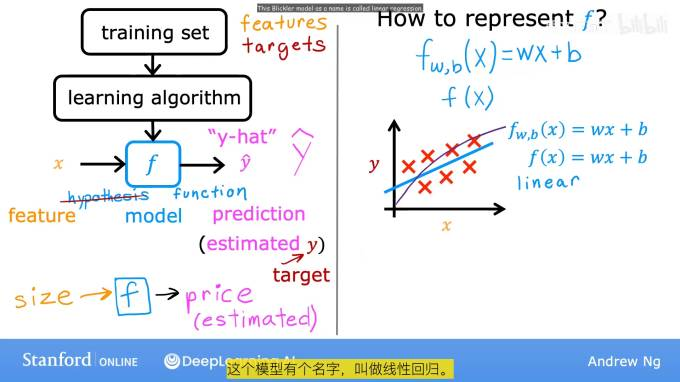
更具体地说，这是单变量线性回归，其中“单变量”一词意味着只有一个输入变量或特征 x，即房屋的面积。05:12
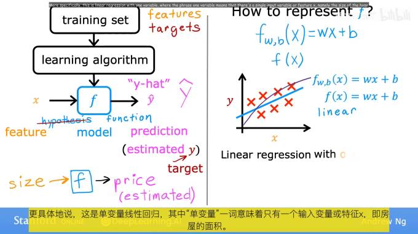
具有一个输入变量的线性模型的另一个名称是单变量线性回归，其中“uni”在拉丁语中意为“一”，“variate”意为“变量”。05:24
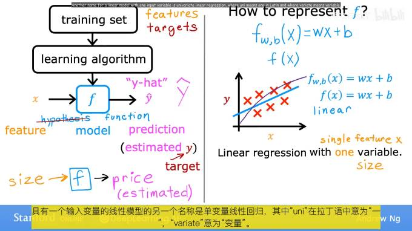
所以单变量就是“一个变量”的另一种说法。05:38
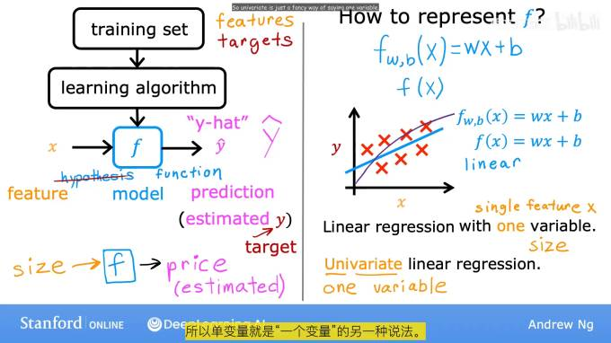
在之后的视频里，你还会看到回归的一种变体，那时你要做的预测不仅仅基于房屋的面积，还基于你可能了解的有关房子的许多其他方面，比如卧室数量和其他特征。05:43
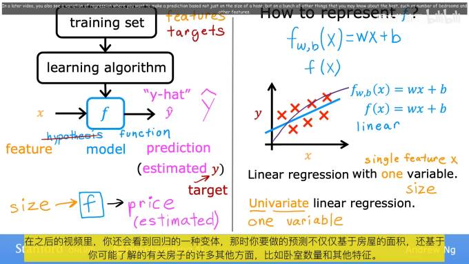
顺便提一下，你看完这期视频后，还有一个可选的实验练习。05:58
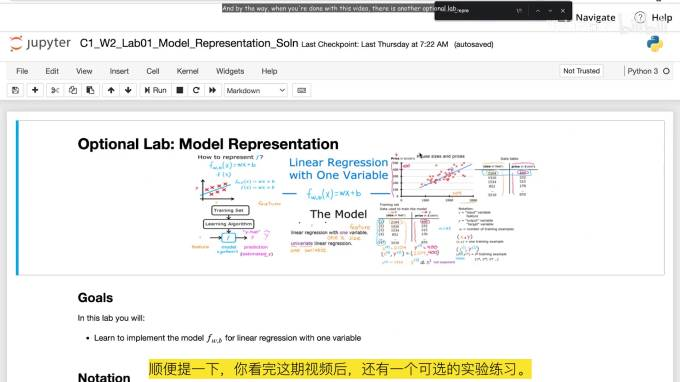
你不需要编写任何代码。06:04
只需回顾一下，运行代码，看看它的功能，它会向你展示如何操作。06:06
在 Python 中定义一个直线函数。06:12
这个实验会让你选择 w 和 b 的值，来尝试拟合训练数据。06:16
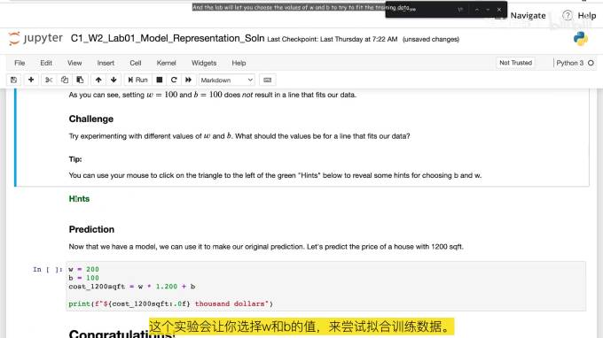
如果你不想做这个实验也没关系，但我希望你看完这期视频后能去尝试一下。06:23
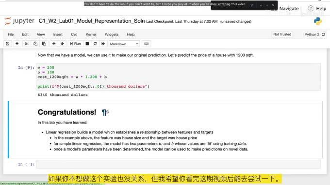
为了让这个方法奏效，你必须做的最重要的事情之一就是构建一个代价函数。06:33
代价函数的概念是机器学习中最普遍、最重要的概念之一，用于线性回归以及训练世界上许多最先进的 AI 模型。06:39
那么，让我们进入下期视频，看看如何构建一个代价函数。06:51